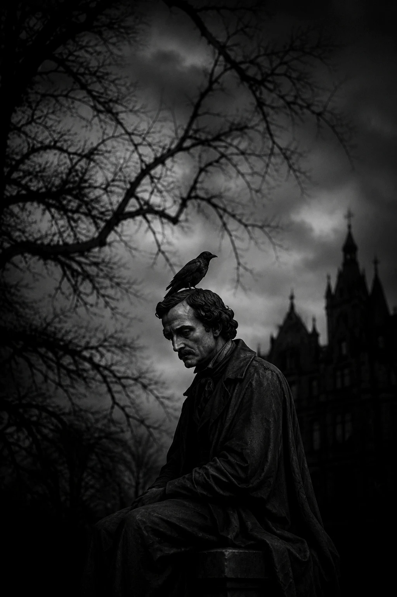
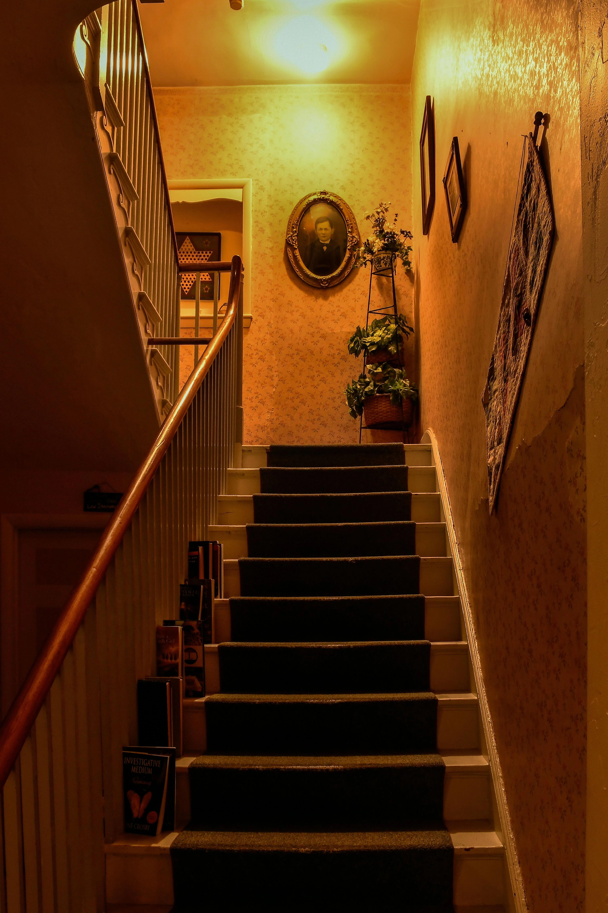

Introduction
Certaines œuvres nous attirent vers la lumière. Elles célèbrent l'aventure, la découverte ou l'espoir. D'autres préfèrent emprunter les couloirs silencieux de l'âme humaine. Elles avancent à pas feutrés dans les régions où se mêlent les souvenirs, les regrets et les inquiétudes que nous portons tous en nous.
Parmi les écrivains qui ont choisi cette seconde voie, Edgar Allan Poe occupe une place singulière.
Plus qu'un auteur de récits fantastiques, il fut un explorateur des ombres. Ses histoires ne cherchent pas seulement à effrayer. Elles révèlent la beauté étrange qui peut naître de l'obscurité. Elles montrent que nos peurs, lorsqu'elles sont observées avec suffisamment d'attention, deviennent parfois des miroirs capables de nous apprendre quelque chose sur nous-mêmes.
Plus d'un siècle après leur publication, ses textes continuent d'habiter les bibliothèques comme des présences discrètes qui refusent de disparaître.

La beauté cachée dans les ténèbres
L'obscurité occupe une place particulière dans l'œuvre de Poe. Elle n'est jamais seulement l'absence de lumière. Elle devient un territoire à part entière. Un espace où les certitudes vacillent et où l'imagination commence son travail. Les demeures abandonnées, les corridors silencieux, les chambres éclairées par une unique bougie ou les paysages noyés dans le brouillard composent un décor devenu emblématique. Pourtant, ces lieux ne servent pas uniquement à créer une atmosphère inquiétante. Ils reflètent souvent l'état intérieur des personnages qui les habitent. Chez Poe, le monde extérieur semble répondre aux émotions secrètes de ceux qui le traversent. C'est peut-être là que réside son élégance. Il ne décrit pas l'obscurité pour elle-même. Il l'utilise comme un langage capable de traduire ce que les mots ordinaires peinent parfois à exprimer.
Les maisons qui se souviennent
Peu d'écrivains ont accordé autant d'importance aux lieux qu'Edgar Allan Poe. Dans ses récits, les maisons semblent posséder une mémoire propre. Les murs conservent les traces du passé. Les objets deviennent les témoins silencieux d'événements oubliés. Même les pierres paraissent chargées d'émotions anciennes. Cette idée atteint son expression la plus célèbre dans La Chute de la maison Usher. La demeure n'y est pas un simple décor. Elle agit comme un personnage à part entière. Elle semble respirer au même rythme que ceux qui l'habitent. Son destin est intimement lié au leur. Cette vision résonne encore aujourd'hui parce qu'elle touche à quelque chose d'universel. Nous avons tous connu un lieu capable de réveiller un souvenir. Une bibliothèque, une chambre, une maison familiale ou un vieux livre retrouvé sur une étagère peuvent parfois faire ressurgir des émotions que nous pensions perdues. Les lieux gardent la mémoire des passages humains. Poe l'avait compris avant beaucoup d'autres.

Le corbeau et les souvenirs qui refusent de partir
S'il existe une œuvre associée à Edgar Allan Poe plus que toute autre, c'est sans doute Le Corbeau. Ce poème célèbre raconte moins l'apparition d'un oiseau mystérieux que la difficulté de vivre avec l'absence. Le corbeau devient la voix obstinée du souvenir. Il rappelle au narrateur ce qu'il cherche désespérément à oublier. Chaque mot prononcé agit comme un écho qui revient sans cesse dans une pièce silencieuse. C'est peut-être pour cette raison que le texte continue de toucher ses lecteurs. Nous connaissons tous ces souvenirs qui refusent de disparaître complètement. Certaines voix, certains visages ou certaines émotions demeurent présents longtemps après avoir quitté notre existence. Poe ne tente pas de les faire taire. Il les écoute. Et c'est précisément dans cette écoute que son œuvre trouve sa force.
Pourquoi Poe nous accompagne encore
Les modes littéraires changent. Les époques passent. Pourtant, Edgar Allan Poe demeure. Ses récits continuent d'être lus parce qu'ils parlent de sujets qui ne vieillissent jamais : la mémoire, le deuil, la solitude, les rêves, les peurs et les mystères que chacun porte en soi. Il nous rappelle que l'obscurité n'est pas forcément un ennemi. Elle peut devenir un lieu de réflexion. Un espace où certaines vérités apparaissent avec davantage de netteté. Un refuge où l'imagination continue de veiller lorsque le reste du monde s'endort.
Conclusion
Plus d'un siècle après sa disparition, Edgar Allan Poe continue d'habiter les rayonnages les plus silencieux de nos bibliothèques. Non parce qu'il a écrit sur la peur. Mais parce qu'il a compris que l'obscurité fait partie de l'expérience humaine. Ses histoires nous invitent à regarder les ombres avec curiosité plutôt qu'avec méfiance. Elles nous rappellent que certaines beautés demeurent invisibles tant que nous refusons de quitter les chemins les plus éclairés. Et peut-être est-ce là le véritable héritage de Poe : nous apprendre que derrière chaque porte entrouverte, chaque souvenir oublié et chaque couloir plongé dans la pénombre, se cache encore une histoire qui attend d'être racontée.
« Certaines ombres ne cachent pas le monde. Elles nous apprennent à le regarder autrement. »
Gardien des archives du Veilleur